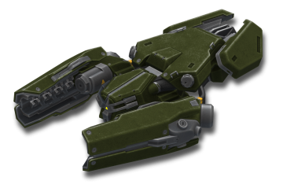
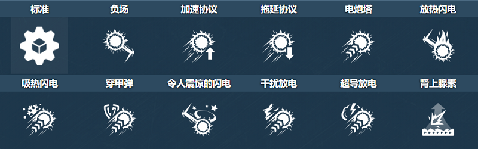
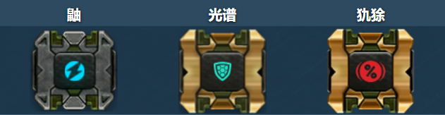
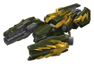

概括
特斯拉是一种独特的电动炮塔，可以以两种方式开火。
首先，其类似泰瑟枪的闪电链功能使您可以通过按住空格键以规则间隔的电击击中近战范围内的敌人。
按下空格键一次激活它的球状闪电发生器，释放一个缓慢移动的节点，
连接并加强你的闪电射击，以击中隐藏或更远的敌人。
特斯拉还可以同时连接多个敌人，将其常规伤害平均分配给所有连接的敌人，
并使用底盘（敌人或友军）来扩展其链条的范围。
车库中的描述
近战炮塔。按住开火键的同时，一道闪电《锁链》攻击对手。
您可以使用闪电球作为链中的“链接”来增加闪电的长度。
在储罐操作过程中触电很简单：在使用道具时忽略安全规定。
然而，触电他人是一项困难得多的任务。
油箱的绝缘性很好，每个油箱都接地。用电击造成伤害的唯一选择是将高压线直接射入装甲。
泰瑟枪的原型无法与其他近战炮塔相媲美。使该原型能够远距离射击的所有尝试都失败了。
当最伟大的发明家之一尼古拉特斯拉的特殊类型晶体管线圈的蓝图被发现时，一切都发生了变化。
新变压器不仅可以远距离用高压射击对手，还可以使用其他坦克的装甲作为中间线圈来增加射击范围。
测试台上意外的短路显示了最罕见的现象——闪电球。
工程师无视所有安全规定，朝着球状闪电的方向射出一连串闪电。
闪电击中球并到达最近的坦克群，击中了一整营全新的坦克。
这个案例展示了炮塔不可否认的战术能力。
但是，规定了一个要求——每辆油罐车都必须通过高压晶体管使用安全措施的检查，并且油罐中始终备有技术手册。
他们说有些玩家把它放在座位和自己之间。
装备改造

防御模块

射击效果

皮肤

特斯拉标准

特斯拉 XT